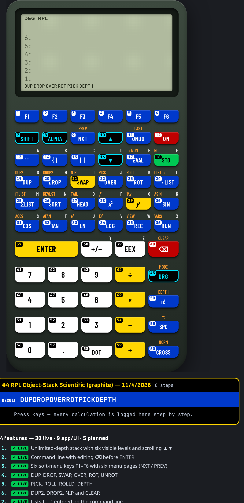

This manual belongs to the U-45 CALCULATORS app and describes calculator #4 — RPL Object-Stack Scientific (graphite) exactly as it behaves in the app. Every worked example and every drill answer in this book was run on the app's own keys by an automated checker before printing; only results that matched were kept.
Keys are written as a chip showing the key number and its face, for example #1 F1. Numbers follow the numbering printed on the keys (switch it on with “# On”). A shifted function is written as two chips: the shift key, then the key that carries the function.
RPL: objects go on an unlimited stack with ENTER; commands act on level 1, 2, …; algebraics in quotes.
Open U-45 CALCULATORS, choose #4 from the home screen (or the jump list at the top), and the calculator appears with its numbered, colour-coded keys. Click or tap keys, or type on a keyboard.
Every key carries a small number in the same reading order as this manual (left→right, top→bottom; the navigation pad counts ▲ ▼ ◀ ▶ then its centre). Use “# On / # Off” in the bar above the calculator to show or hide them — the setting is remembered.
Keys are coloured by job: white = digits, yellow = operators/execute, blue = functions, green = memory/variables, red = clear/delete/power, black with cyan = shift/modes/menus/navigation. Press “Classic” to return to the original model colours and “Hi-Contrast” to come back.
Display text uses the U45 Display face, key legends use U45 Keys (a condensed face that stays readable on small keys) and key numbers / helper text use U45 Mono. All three are bundled inside the app, so they work offline.
The Copy button copies exactly what the display shows (indicators that are switched off are skipped) so you can paste a result into a message or spreadsheet.
Fit scales the calculator to your screen; 1:1 shows it at its design size. On a phone, Fit is the comfortable choice.
Reset rebuilds this calculator from scratch: display, memory, stack and modes return to their start-up state. Use it before each worked example in this manual.
On a computer you can type: digits, + − * / ^ ( ), Enter or = to execute, Backspace to delete, Esc to clear, arrows to move. Letters reach common functions (see the Keyboard shortcuts chapter).
Hover over (or long-press) a key to see “#number name”.
A cyan icon rail on the right of every calculator opens 15 panels: Currency (166 currencies, rates auto-updated from open.er-api.com or Frankfurter when online and cached with a date; the bundled dated snapshot is used offline), Units (exact SI factors), Health (published formulas, not medical advice), Simple, Complex, Loans, Construction, Mechanical and Engineering (30+ numbered tools each), Calendar generator, Customize (26 options, saved per calculator), Settings (31 options), History, Hide and View. On narrow phones the rail shows icons only.
Every calculation is logged per calculator with a date and time. Open History on the rail to search, re-use (types the input back into the calculator), copy, delete one, select several and delete, or delete all (asks for confirmation). History is stored encrypted on this device (AES-GCM); exporting it needs the passcode.
The green CS button between Restore and Social reads a problem from the camera, a photo, a PDF or a text file. Recognition (Tesseract OCR, English) runs offline on the device; an online language download is only used if you switch it on in Settings. Check and edit the recognised text, then Solve shows the steps offline. OCR is not available when the app is opened as a plain file:// page in a browser.
The layout selector between Fit and # offers Auto plus 12 layouts: 3D classic, 3D high-contrast, Classic, Pocket, Compact, Expanded, Desktop wide, Split, One-hand left, One-hand right, Large print and Minimal. Auto picks one for your screen and your choice is remembered per calculator. The View panel hides the top bars, the tool bar, the rail or everything (full screen); the round yellow ⤢ button at bottom-left (or Esc) always restores the normal view.
The Hide panel lists every button, rail icon and section of this calculator as tick boxes. Hiding is instant; unhiding asks for the app passcode.
Right-click, drag and long-press saving of images is blocked inside the app. Saving or sharing an image export (PNG, JPG, QR, calendar), printing a calendar, and downloading or sharing the app itself ask for the passcode, and exported images carry a U-45 watermark. Honest note: this cannot stop a screenshot or screen recording made by the operating system or another device.
U-45 CALCULATORS is an offline app: after the first load everything — including fonts — comes from the device.
| Colour | Group | Keys on this model |
|---|---|---|
| num | Digits & number entry | #38, #39, #41, #42, #43, #46, #47, #48, #51, #52, #53, #56, #57, #58 |
| op | Operators & execute | #21, #29, #37, #44, #49, #54, #59 |
| fn | Functions | #1, #2, #3, #4, #5, #6, #9, #11, #13, #14, #15, #17, #19, #20, #22, #23, #24, #25, #26, #27, #28, #30, #31, #32, #33, #34, #35, #36, #50, #55, #60 |
| mem | Memory, variables & registers | #18 |
| clr | Clear, delete & power | #12, #40 |
| mod | Shift, modes, menus & navigation | #7, #8, #10, #16, #45 |
44 features: 30 live on the keys, 9 app/UI features, 5 planned (documented but not yet working — they are clearly marked and never used in examples).
Calculator #4 is a RPL: objects go on an unlimited stack with ENTER; commands act on level 1, 2, …; algebraics in quotes. Each card below is one of its 30 working features, with the keys that reach it and, where one exists, a verified example.
Calculator #4 with key numbers shown (Hi-Contrast colours).
“Shift” = 2nd / f / SHIFT layer; “Alpha” = ALPHA layer; “3rd” = 3rd / g layer. A dot means the layer is empty on that key.
| # | Face | Shift | Alpha | 3rd | Group |
|---|---|---|---|---|---|
| 1 | F1 | · | · | · | fn |
| 2 | F2 | · | · | · | fn |
| 3 | F3 | · | · | · | fn |
| 4 | F4 | · | · | · | fn |
| 5 | F5 | · | · | · | fn |
| 6 | F6 | · | · | · | fn |
| 7 | SHIFT | · | · | · | mod |
| 8 | ALPHA | · | · | · | mod |
| 9 | NXT | PREV | · | · | fn |
| 10 | ▲ | · | · | · | mod |
| 11 | UNDO | LAST | · | · | fn |
| 12 | ON | · | · | · | clr |
| 13 | ' ' | · | A | · | fn |
| 14 | { } | · | B | · | fn |
| 15 | [ ] | · | C | · | fn |
| 16 | ▼ | · | D | · | mod |
| 17 | EVAL | →NUM | E | · | fn |
| 18 | STO | RCL | F | · | mem |
| 19 | DUP | DUP2 | G | · | fn |
| 20 | DROP | DROP2 | H | · | fn |
| 21 | SWAP | NIP | I | · | op |
| 22 | OVER | PICK | J | · | fn |
| 23 | ROT | ROLL | K | · | fn |
| 24 | →LIST | LIST→ | L | · | fn |
| 25 | ΣLIST | ΠLIST | M | · | fn |
| 26 | SORT | REVLST | N | · | fn |
| 27 | HEAD | TAIL | O | · | fn |
| 28 | x² | √ | P | · | fn |
| 29 | yx | 1/x | Q | · | op |
| 30 | SIN | ASIN | R | · | fn |
| 31 | COS | ACOS | S | · | fn |
| 32 | TAN | ATAN | T | · | fn |
| 33 | LN | ex | U | · | fn |
| 34 | LOG | 10x | V | · | fn |
| 35 | REC | VIEW | W | · | fn |
| 36 | RUN | VARS | X | · | fn |
| 37 | ENTER | · | · | · | op |
| 38 | +/− | · | Y | · | num |
| 39 | EEX | · | Z | · | num |
| 40 | ⌫ | CLEAR | · | · | clr |
| 41 | 7 | · | · | · | num |
| 42 | 8 | · | · | · | num |
| 43 | 9 | · | · | · | num |
| 44 | ÷ | · | · | · | op |
| 45 | DRG | MODE | · | · | mod |
| 46 | 4 | · | · | · | num |
| 47 | 5 | · | · | · | num |
| 48 | 6 | · | · | · | num |
| 49 | × | · | · | · | op |
| 50 | n! | DEPTH | · | · | fn |
| 51 | 1 | · | · | · | num |
| 52 | 2 | · | · | · | num |
| 53 | 3 | · | · | · | num |
| 54 | − | · | · | · | op |
| 55 | SPC | π | · | · | fn |
| 56 | 0 | · | · | · | num |
| 57 | . | · | · | · | num |
| 58 | DOT | · | · | · | num |
| 59 | + | · | · | · | op |
| 60 | CROSS | NORM | · | · | fn |
Every key on calculator #4, in number order, with every function it carries in this app.
8 examples, each run on this calculator's keys by the U-45 checker. Follow the chips in order.
Calculate 2 ENTER 3 +. Press Reset first.
#52 2 → #37 ENTER → #53 3 → #59 +
Display shows 1:5 — expected 5. ✔ verified on the app.
Calculate 7 DUP ×. Press Reset first.
#41 7 → #19 DUP → #49 ×
Display shows 1:49 — expected 49. ✔ verified on the app.
Calculate 1 ENTER 2 ENTER 3 ENTER 3 →LIST ΣLIST. Press Reset first.
#51 1 → #37 ENTER → #52 2 → #37 ENTER → #53 3 → #37 ENTER → #53 3 → #24 →LIST → #25 ΣLIST
Display shows 1:6 — expected 6. ✔ verified on the app.
Calculate '2+3*4' EVAL. Press Reset first.
#13 ' ' → #52 2 → #59 + → #53 3 → #49 × → #46 4 → #37 ENTER → #17 EVAL
Display shows 1:14 — expected 14. ✔ verified on the app.
Calculate 2 ENTER 5 OVER +. Press Reset first.
#52 2 → #37 ENTER → #47 5 → #22 OVER → #59 +
Display shows 1:7 — expected 7. ✔ verified on the app.
Calculate 1 ENTER 2 ENTER 3 ROT. Press Reset first.
#51 1 → #37 ENTER → #52 2 → #37 ENTER → #53 3 → #23 ROT
Display shows 1:1 — expected 1. ✔ verified on the app.
Calculate {3 1 2} SORT HEAD. Press Reset first.
#14 { } → #53 3 → #55 SPC → #51 1 → #55 SPC → #52 2 → #37 ENTER → #26 SORT → #27 HEAD
Display shows 1:1 — expected 1. ✔ verified on the app.
Calculate 5 'A' STO A 2 ×. Press Reset first.
#47 5 → #37 ENTER → #13 ' ' → #8 ALPHA → #13 A → #37 ENTER → #18 STO → #8 ALPHA → #13 A → #37 ENTER → #52 2 → #49 ×
Display shows 1:10 — expected 10. ✔ verified on the app.
RPN works number, number, operator: 3 ENTER 4 + = 7. Results stay on the stack for the next step.
After an operation, just type the next number and operator: 3 ENTER 4 + 5 × gives (3+4)×5 = 35.
If you entered numbers in the wrong order for − ÷ or yˣ, press x≷y before the operator.
LASTx brings back the X value of the previous operation — useful for a × a.
Up to four values are kept; R↓ rolls through them.
On 4-level stacks the T register copies down, so a constant multiplier can be reused by pressing × repeatedly.
53 extra functions sit on shifted layers. Press the layer key once, then the key: for example #7 then #9 → PREV; #7 then #11 → LAST; #8 then #13 → A; #8 then #14 → B.
Use Appendix B (function finder): look up the function, read its key number, then find that number on the keypad. Numbers run left→right, top→bottom from #1 to #60.
28 keys on this model have a keyboard shortcut (see chapter 7). Typing digits and operators is much faster than clicking.
Estimate first (round each number) and compare with the display. If the answer is 10× or 100× off, a decimal point or percent key was missed.
Press Copy in the bar above the calculator to put the display text on the clipboard instead of retyping it.
Hi-Contrast colours use black/white/yellow/blue/green/red with black or white text for maximum contrast; key numbers stay on in both colour schemes.
With the calculator open on a computer, these physical keys press the numbered keys below (Ctrl/Alt/⌘ combinations are left to the browser). Shifted functions are reached by clicking the shift key first.
| Keyboard | # | Key | Does |
|---|---|---|---|
| ArrowUp | #10 | ▲ | Scroll stack up |
| ArrowDown | #16 | ▼ | Scroll stack down |
| q | #28 | x² | Square x² |
| ^ | #29 | yx | Power xʸ / ^ — raise to any power. Chains right-to-left (2^3^2 = 2^9 = 512) |
| s | #30 | SIN | Sine (uses the current angle unit) |
| c | #31 | COS | Cosine (current angle unit) |
| t | #32 | TAN | Tangent (current angle unit) |
| n | #33 | LN | Natural logarithm ln |
| l | #34 | LOG | Common logarithm log₁₀ |
| Enter | #37 | ENTER | ENTER — terminates digit entry and pushes X up the stack (RPN) / confirms a value |
| e | #39 | EEX | EEX — enter a power-of-ten exponent for the number in X |
| Backspace Delete | #40 | ⌫ | Backspace — delete the last digit typed |
| 7 | #41 | 7 | Digit 7 |
| 8 | #42 | 8 | Digit 8 |
| 9 | #43 | 9 | Digit 9 |
| / | #44 | ÷ | Division ÷ |
| 4 | #46 | 4 | Digit 4 |
| 5 | #47 | 5 | Digit 5 |
| 6 | #48 | 6 | Digit 6 |
| * x | #49 | × | Multiplication × |
| ! | #50 | n! | Factorial n! (also on non-integers via the gamma function where supported) |
| 1 | #51 | 1 | Digit 1 |
| 2 | #52 | 2 | Digit 2 |
| 3 | #53 | 3 | Digit 3 |
| - | #54 | − | Subtraction − |
| 0 | #56 | 0 | Digit 0 |
| . , | #57 | . | Vector dot product |
| + | #59 | + | Addition + |
| “# On / # Off” | show / hide key numbers |
| “Classic / Hi-Contrast” | switch key colours |
| “Copy” | copy display text |
| “Fit / 1:1” | scale to screen / design size |
| “Reset” | restart this calculator |
| Jump list | switch to another of the 45 calculators |
ENTER after + duplicates the result. Usually you want to type the next number directly.
Y − X and Y ÷ X: enter the first operand first. 10 ENTER 4 − = 6.
Make a number negative with CHS/+/−, not with −.
If f / g / SHIFT is shown, the next key is shifted. Clear it with the prefix-clear function.
Old values (memory, stack, open brackets, worksheet values) can leak into the next calculation. Press Reset or clear before starting a new problem.
A shift / 2nd indicator that is still lit will turn the next key into its shifted function. Look at the display indicators before pressing.
Work each one on calculator #4, then check your keys and the answer in Appendix A. Every answer was produced by this calculator.
Without looking at the table, find each key on the picture. Answers in Appendix A.
| Function | Label | Keys |
|---|---|---|
| 10ˣ — antilog | 10x | #7 → #34 |
| Addition + | + | #59 |
| All but first | TAIL | #7 → #27 |
| ALPHA — the next key types its letter/variable (red/green label) | ALPHA | #8 |
| Backspace — delete the last digit typed | ⌫ | #40 |
| Change sign (+/−) of the number being typed or the current result | +/− | #38 |
| chr:A | A | #8 → #13 |
| chr:B | B | #8 → #14 |
| chr:C | C | #8 → #15 |
| chr:D | D | #8 → #16 |
| chr:E | E | #8 → #17 |
| chr:F | F | #8 → #18 |
| chr:G | G | #8 → #19 |
| chr:H | H | #8 → #20 |
| chr:I | I | #8 → #21 |
| chr:J | J | #8 → #22 |
| chr:K | K | #8 → #23 |
| chr:L | L | #8 → #24 |
| chr:M | M | #8 → #25 |
| chr:N | N | #8 → #26 |
| chr:O | O | #8 → #27 |
| chr:P | P | #8 → #28 |
| chr:Q | Q | #8 → #29 |
| chr:R | R | #8 → #30 |
| chr:S | S | #8 → #31 |
| chr:T | T | #8 → #32 |
| chr:U | U | #8 → #33 |
| chr:V | V | #8 → #34 |
| chr:W | W | #8 → #35 |
| chr:X | X | #8 → #36 |
| chr:Y | Y | #8 → #38 |
| chr:Z | Z | #8 → #39 |
| Clear stack | CLEAR | #7 → #40 |
| Common logarithm log₁₀ | LOG | #34 |
| Copy level 2 | OVER | #22 |
| Copy level n | PICK | #7 → #22 |
| Cosine (current angle unit) | COS | #31 |
| Digit 0 | 0 | #56 |
| Digit 1 | 1 | #51 |
| Digit 2 | 2 | #52 |
| Digit 3 | 3 | #53 |
| Digit 4 | 4 | #46 |
| Digit 5 | 5 | #47 |
| Digit 6 | 6 | #48 |
| Digit 7 | 7 | #41 |
| Digit 8 | 8 | #42 |
| Digit 9 | 9 | #43 |
| Display format | MODE | #7 → #45 |
| Division ÷ | ÷ | #44 |
| DRG — choose/convert the angle unit (Deg / Rad / Grad) | DRG | #45 |
| Drop level 1 | DROP | #20 |
| Drop level 2 | NIP | #7 → #21 |
| Drop levels 1–2 | DROP2 | #7 → #20 |
| Duplicate level 1 | DUP | #19 |
| Duplicate levels 1–2 | DUP2 | #7 → #19 |
| EEX — enter a power-of-ten exponent for the number in X | EEX | #39 |
| ENTER — terminates digit entry and pushes X up the stack (RPN) / confirms a value | ENTER | #37 |
| Evaluate level 1 | EVAL | #17 |
| eˣ — exponential | ex | #7 → #33 |
| Explode a list | LIST→ | #7 → #24 |
| Factorial n! (also on non-integers via the gamma function where supported) | n! | #50 |
| First element | HEAD | #27 |
| Inverse cosine cos⁻¹ | ACOS | #7 → #31 |
| Inverse sine sin⁻¹ | ASIN | #7 → #30 |
| Inverse tangent tan⁻¹ | ATAN | #7 → #32 |
| Last argument | LAST | #7 → #11 |
| Level 3 to level 1 | ROT | #23 |
| List variables | VARS | #7 → #36 |
| Multiplication × | × | #49 |
| n items into a list | →LIST | #24 |
| Natural logarithm ln | LN | #33 |
| Next soft-menu page | NXT | #9 |
| Numeric value | →NUM | #7 → #17 |
| ON — power on | ON | #12 |
| Power xʸ / ^ — raise to any power. Chains right-to-left (2^3^2 = 2^9 = 512) | yx | #29 |
| Previous soft-menu page | PREV | #7 → #9 |
| Product of list | ΠLIST | #7 → #25 |
| Recall | RCL | #7 → #18 |
| Reciprocal x⁻¹ (1/x) | 1/x | #7 → #29 |
| Record keystrokes | REC | #35 |
| Reverse a list | REVLST | #7 → #26 |
| Roll level n to 1 | ROLL | #7 → #23 |
| Run recorded program | RUN | #36 |
| Scroll stack down | ▼ | #16 |
| Scroll stack up | ▲ | #10 |
| SHIFT / 2nd — the next key uses its upper (shift-coloured) function | SHIFT | #7 |
| Sine (uses the current angle unit) | SIN | #30 |
| Soft key 1 (label on screen) | F1 | #1 |
| Soft key 2 | F2 | #2 |
| Soft key 3 | F3 | #3 |
| Soft key 4 | F4 | #4 |
| Soft key 5 | F5 | #5 |
| Soft key 6 | F6 | #6 |
| Sort a list | SORT | #26 |
| Space separator | SPC | #55 |
| Square root √ | √ | #7 → #28 |
| Square x² | x² | #28 |
| Stack depth | DEPTH | #7 → #50 |
| Start a list | { } | #14 |
| Start a vector | [ ] | #15 |
| Start an algebraic | ' ' | #13 |
| STO — store the value into a memory / variable (press the target next) | STO | #18 |
| Subtraction − | − | #54 |
| Sum of list | ΣLIST | #25 |
| Swap levels 1 and 2 | SWAP | #21 |
| Tangent (current angle unit) | TAN | #32 |
| undo | UNDO | #11 |
| Vector cross product | CROSS | #60 |
| Vector dot product | . | #57 |
| Vector dot product | DOT | #58 |
| Vector length | NORM | #7 → #60 |
| View program | VIEW | #7 → #35 |
| π (3.14159265…) as an exact constant | π | #7 → #55 |
Reverse-Polish-Lisp style stack processor: every object (number, list, vector, algebraic) lives on an unlimited stack. All stack and list logic is original U-45 code.
An algebraic typed in quotes stays symbolic until EVAL; arithmetic between algebraics joins them into a new algebraic.
U-45 CALCULATORS models are independent software recreations; they are not affiliated with any calculator manufacturer and carry no third-party trademarks.
| #1 F1 | #2 F2 | #3 F3 |
| #4 F4 | #5 F5 | #6 F6 |
| #7 SHIFT | #8 ALPHA | #9 NXT ⇧ PREV |
| #10 ▲ | #11 UNDO ⇧ LAST | #12 ON |
| #13 ' ' | #14 { } | #15 [ ] |
| #16 ▼ | #17 EVAL ⇧ →NUM | #18 STO ⇧ RCL |
| #19 DUP ⇧ DUP2 | #20 DROP ⇧ DROP2 | #21 SWAP ⇧ NIP |
| #22 OVER ⇧ PICK | #23 ROT ⇧ ROLL | #24 →LIST ⇧ LIST→ |
| #25 ΣLIST ⇧ ΠLIST | #26 SORT ⇧ REVLST | #27 HEAD ⇧ TAIL |
| #28 x² ⇧ √ | #29 yx ⇧ 1/x | #30 SIN ⇧ ASIN |
| #31 COS ⇧ ACOS | #32 TAN ⇧ ATAN | #33 LN ⇧ ex |
| #34 LOG ⇧ 10x | #35 REC ⇧ VIEW | #36 RUN ⇧ VARS |
| #37 ENTER | #38 +/− | #39 EEX |
| #40 ⌫ ⇧ CLEAR | #41 7 | #42 8 |
| #43 9 | #44 ÷ | #45 DRG ⇧ MODE |
| #46 4 | #47 5 | #48 6 |
| #49 × | #50 n! ⇧ DEPTH | #51 1 |
| #52 2 | #53 3 | #54 − |
| #55 SPC ⇧ π | #56 0 | #57 . |
| #58 DOT | #59 + | #60 CROSS ⇧ NORM |
U-45 CALCULATORS · Calculator #4 · cut out and keep